概述 Overview
LUCY - 虛擬面試招募平台
#B2B #SaaS #RWD Website
產品服務｜LUCY 是一款重塑現代招募流程的 SaaS 平台。核心功能「虛擬面試」實現了非同步面試，打破時空限制並大幅降低初試成本。
Role | UIUX Designer
Description | 我主導了從 0 到 1 的品牌識別與 RWD 跨端介面設計，在複雜的招募邏輯中打造高效、直覺的產品體驗。
設計驅動效率：
透過 Personas 與 User Story Maps 精準定義痛點，優化流程以降低資訊載重，節省企業篩選人才的隱形成本。
直觀管理體驗：
整合標準化題庫與一站式人才中控台，將碎片化資訊結構化，輔助招募團隊達成決策。
品牌價值延伸：
統一產品與官網視覺語彙，確保應徵者在遠端面試時擁有流暢且專業的互動體驗。
設計
流程
Empathize
✦ Empathy Map
✦ Personas
✦ User Story Maps
✦ Interview Method
✦ Competitive Audit
Define
✦ Value Proposition
✦ Information Architecture
Ideate
✦ Story Board
✦ User Flow
Wireframe
✦ Wireframe
✦ Lo-fi Prototype
UI Design
✦ Visual design system
✦ UI Kit
✦ Usability test
Prototype
✦ Mockup
✦ HiFi-Prototype
✦ Test
Test
✦ Usability test

痛點與觀察 Pain Point & Task
解決招募流程的低效與斷層
面對招募成效低落、面試題目難產、以及資訊破碎化等核心痛點，我們啟動了 LUCY 產品計畫，旨在透過數位化工具重塑企業的徵才體驗。
- 策略收斂：根據調研結果，將分散的痛點轉化為產品開發的核心指標，確立「高效篩選」與「直覺管理」的設計方向。
- 需求勾勒：運用 Personas 與 User Story Maps 描繪 HR 的心智模型，挖掘「資訊過載」背後的深層需求。
- 痛點驗證：透過深度用戶訪談釐清真實的招募阻礙，確保開發功能精準對接「標準化困難」等實務問題。
設計重點 Solution
- 重塑招募效率：導入非同步虛擬面試技術，突破時空限制以大幅降低初試的人力與時間成本，實現高效的人才初步篩選。
- 智慧題庫輔助：建立標準化面試題庫，解決面試官「無從出題」的痛點，確保不同職位的評核標準具備一致性與專業度。
- 結構化管理中樞：打造直觀的資訊中控台，透過視覺降噪與資訊層級優化，協助團隊在海量數據中精準掌握關鍵資訊，降低認知負擔。


架構定義與功能路徑 Define
回歸利害關係人（HR、面試官）的真實需求，透過 User Story Maps 鎖定「資訊過載」與「面試標準化」為核心，從 0 到 1 定義開發優先順序，避免無效的功能堆疊。
- 策略收斂：根據調研結果，將分散的痛點轉化為產品開發的核心指標，確立「高效篩選」與「直覺管理」的設計方向。
- 需求勾勒：運用 Personas 與 User Story Maps 描繪 HR 的心智模型，挖掘「資訊過載」背後的深層需求。
- 痛點驗證：透過深度用戶訪談釐清真實的招募阻礙，確保開發功能精準對接「標準化困難」等實務問題。
資訊架構 Define

User Flow Ideate
以效率為核心的邏輯定義
招募成效的核心在於「時效」。在梳理 User Flow 時，我重點設計了後台設定與前台徵才頁面的自動同步機制。透過邏輯優化，確保職缺一經確認即可即時產出應徵入口，消除傳統招募中跨系統搬移資料的冗餘步驟，實現極簡的一站式流程。
- 自動化連動： 將「創建」與「發佈」邏輯串接，大幅縮短職缺上線的時間成本。
- 引導式路徑： 將複雜的 B2B 設定拆解為線性任務，確保用戶能直覺地完成高難度的配置工作。


Wireframe
從草圖到線框：建立清晰介面架構
在視覺開發前，我透過 Wireframe 將 User Flow 的抽象路徑具象化。我習慣先以草圖快速驗證佈局，重點在於確立龐雜招募資訊的顯示優先順序，確保用戶能在高密度的管理介面中，第一時間掌握核心數據。
- 資訊降噪：定義關鍵欄位與操作按鈕的視覺權重，降低長流程操作中的疲勞感。
- 架構預檢：在進入高保真設計前，優先確認介面元件的邏輯結構，確保產品功能的擴充性與穩定性。
創建職缺
關聯性較高的內容列在一起
▍步驟式的引導打造直覺化職缺創建流程 | 三階段導引式架構
▍重整資訊架構：將關聯性較高的分區，讓使用者可以依序填入對應內容。
▍自動匯入：輸入的內容資料可自動匯入作品對應區塊中。
流暢引導，簡化複雜的徵才配置
- 即時預覽機制： 獨創左側輸入、右側同步模擬的設計，讓用戶即時看見應徵者端的呈現效果，大幅提升填寫動機與精準度。
- 智慧預載功能： 預先整合系統預設值，減少 50% 以上的手動輸入成本，讓「創建」變得毫不費力。
- 無縫儲存體驗： 內建自動草稿機制，確保在任何階段都能彈性中斷並隨時恢復，提供穩定的操作安全感。
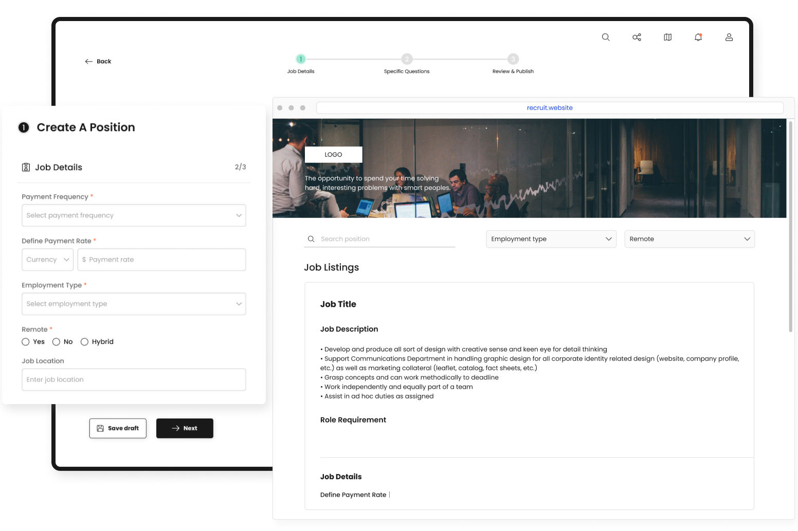
Specific Questions 選擇題庫
AI 輔助選題 | 建立標準化的面試基準
針對職位特質，我設計了具備分類檢索與 AI 建議功能的題庫系統。透過高辨識度的層級導引，協助招募者在海量題庫中精確過濾並定位核心考點，在極短時間內配置出具備專業度的面試腳本。
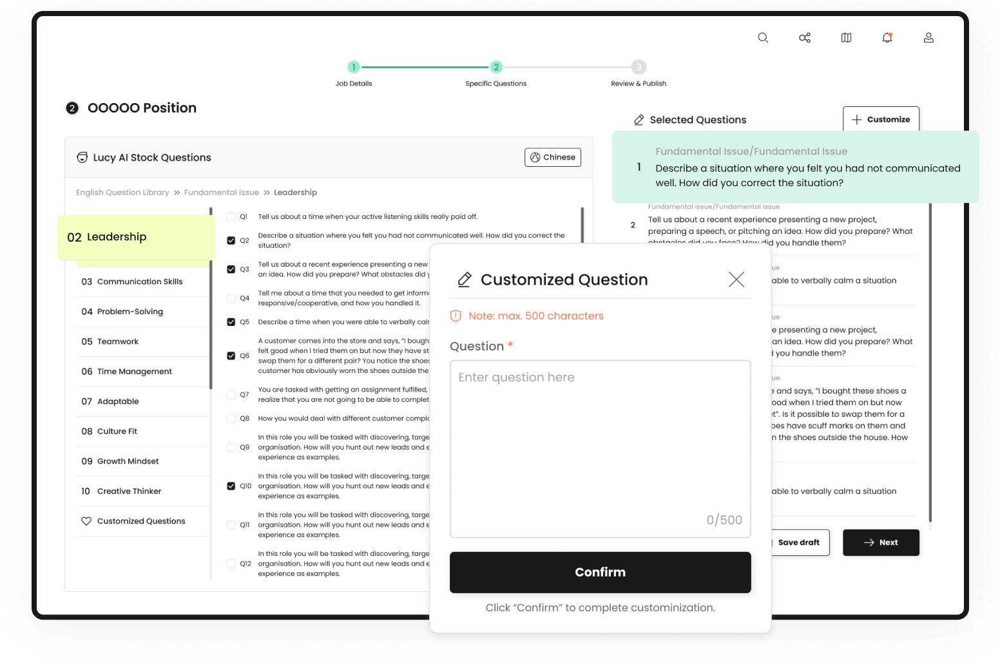
跨語系支援與高彈性選題機制
在視覺開發前，我透過 Wireframe 將 User Flow 的抽象路徑具象化。我習慣先以草圖快速驗證佈局，重點在於確立龐雜招募資訊的顯示優先順序，確保用戶能在高密度的管理介面中，第一時間掌握核心數據。
- 麵包屑導覽索引
針對龐大的題庫建立視覺索引，讓使用者隨時掌握目前的篩選路徑，大幅提升操作的掌控感。 - 中英系題庫即時切換
滿足國際化招募需求，支援語系一鍵轉換，確保跨國面試官皆能精準掌握題目語義。 - 直覺式拖曳排序
已選題目會同步呈現於右側預覽區，支援隨意拖曳排列順序，將「排序」操作簡化至極致。 - 靈活客製化題目
除了系統預設，提供彈性新增按鈕，賦予面試官針對職位特徵自行定義題目的權利。
高資訊密度的結構化管理面板
職缺創建完成後，管理頁面需承載大量職務細節與應徵進度。我透過模組化清單設計，將龐雜的職位資訊進行視覺降噪，確保 HR 能在單一介面快速執行檢視、編輯與狀態追蹤。
- 視覺化資訊層級： 運用清晰的區塊分割與文字權重對比，將「職位名稱」、「創建日期」與「招募狀態」等核心指標優先呈現，縮短用戶搜尋關鍵資訊的時間。
- 一站式操作中控台： 整合編輯、複製、草稿與刪除等常用功能於條目右側，減少頁面跳轉頻率，提升管理效率。
- 多維度篩選機制： 針對多職缺管理的場景，建立直觀的頂部篩選器，讓用戶能根據狀態或日期精準定位特定職缺，解決資訊過載的痛點。
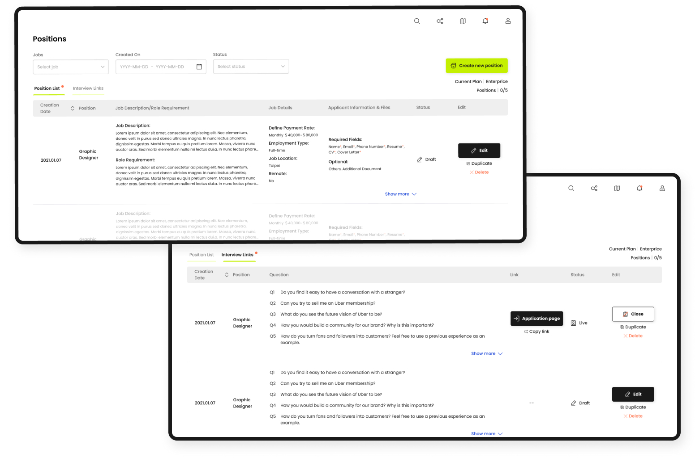
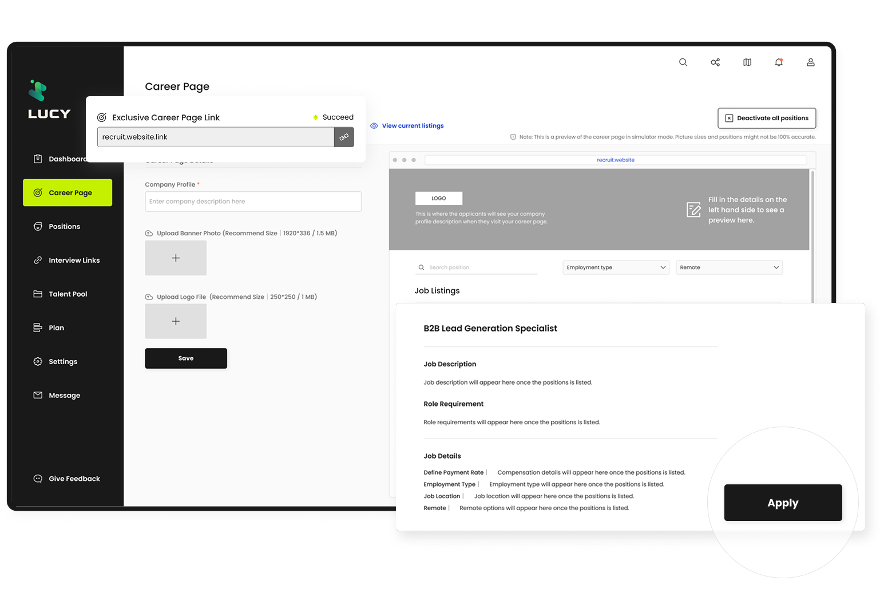
自動生成企業專屬徵才頁面
職缺設定完成後，系統將自動同步至徵才網頁。透過高度自動化的串接機制，確保企業能以最少的人力成本，即時發佈具備專業品牌形象的招募入口。
- 一鍵同步發佈：職缺設定確認後，系統即刻生成職缺卡片與「Apply」按鈕，應徵者可直接進入虛擬面試流程，實現招募自動化。
- 自定義企業門面：提供直觀的 Career Page 編輯介面，支援上傳公司簡介、Logo 與 Banner，讓企業在零工程介入的情況下，擁有專屬的視覺識別。
- 高效轉化路徑：將繁瑣的網頁串接與面試邀約整合進單一自動化漏斗，確保從瀏覽職缺到完成投遞的體驗順暢無阻。
人才管理庫｜數據驅動的決策中樞
應徵者的回傳資料會自動彙整於人才庫中。用戶能根據自身步調，高效瀏覽應徵者詳情並紀錄篩選狀態。
- 一站式人才綜覽：整合履歷、作品集與虛擬面試回傳影片，讓評審官無需切換視窗，即可掌握候選人的全方位特質。
- 狀態追蹤與標記：內建即時篩選紀錄功能，確保招募團隊能清楚掌握每一位應徵者的評選進度，達成無縫協作。
- 自動化互動機制：針對心儀人才可一鍵發送虛擬面試邀約或進一步聯繫，極致簡化繁瑣的溝通成本，提升招募轉化成效。
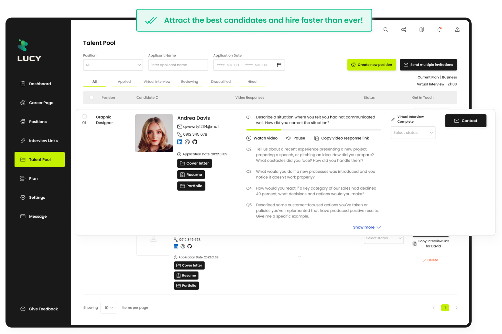
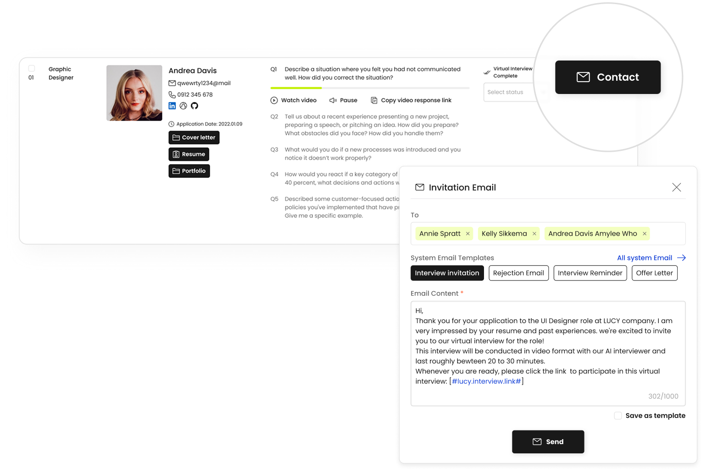
系統信件 | 高效維繫人才關係
針對人才庫中的潛力候選人，設計了內建的即時聯繫系統。透過標準化信件範本與自動化發送機制，解決傳統招募溝通破碎且耗時的痛點。
- 一鍵式批量聯繫：支援同時向多位應徵者發送面試邀約、提醒或感謝信，大幅縮短招募團隊的作業週期。
- 結構化信件範本：預設多款專業招募情境範本，確保企業對外溝通的一致性與專業度，提升品牌形象。
- 流程無縫銜接：直接於人才庫介面觸發聯繫動作，減少頁面跳轉，讓「評選」與「邀約」操作一氣呵成。
自動化面試邀約
透過自動化面試機制，應徵者能隨時隨地參與面試，影音對話介面打造展現真實特質的無壓力空間。
- 非同步面試路徑：應徵者收到邀約後即可彈性進入系統，透過預錄影音與引導式問題完成初試，實現 24/7 不間斷的人才篩選。
- 沉浸式影音介面：採用大區塊影音佈局與清晰的題目引導視窗，確保面試過程流暢且具備專業感。
- 一鍵式聯繫轉化：系統整合自動化通知功能，招募團隊可隨時根據面試回傳結果，點擊按鈕直接發送後續聯繫。
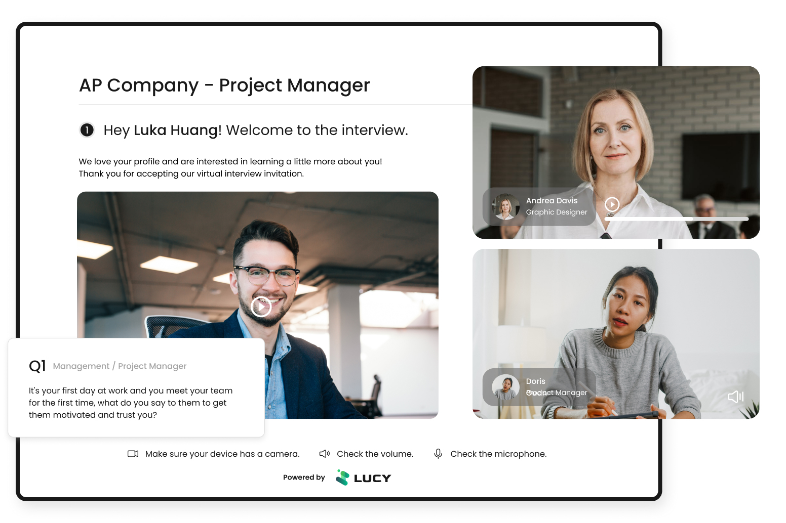
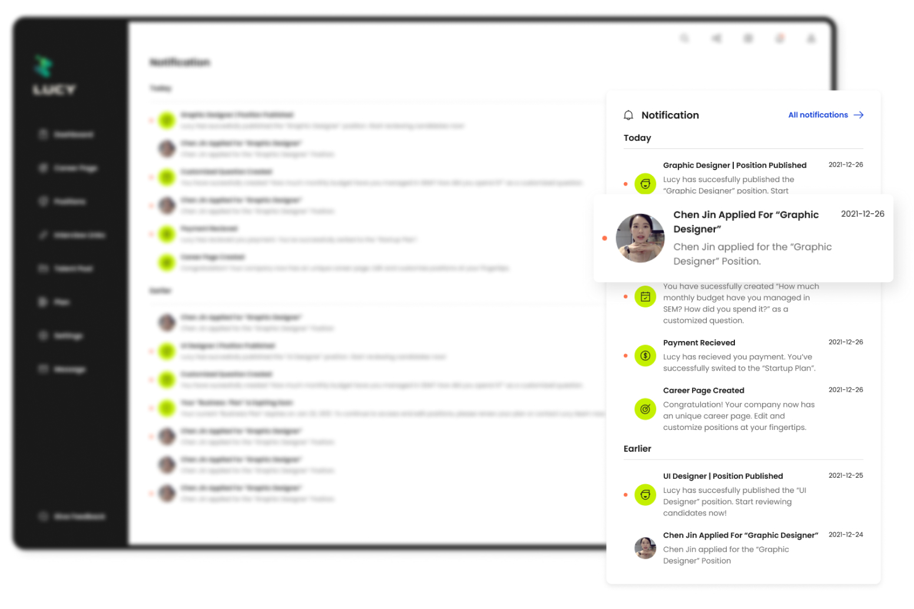
關鍵人才動態不漏接
為了讓 HR 能在第一時間掌握招募動態，將介面設計成高辨識度的通知系統，透過視覺化的分類與排序，確保每一項關鍵資訊都能被即時處理。
- 分類圖示化：運用不同類型的圖示區分職缺發佈、候選人投遞等通知，協助用戶快速篩選重要資訊。
- 狀態即時標註：清楚標示訊息讀取狀態，確保招募團隊在繁忙的工作流中不遺漏任何一位潛在人才。
- 時間軸優先排序：採用時間戳記進行降冪排列，將今日最新的招募動態置頂，最大化資訊處理效率。
建立一致的品牌感官體驗
透過標準化的介面規範與一致的設計風格，引導使用者快速沉浸於產品流程中，建立深度的品牌信賴感。在設計系統中，我專注於「直覺化操作」、「全局一致性」與「資訊權重強調」，在契合用戶心智模型的同時，確保企業專業形象的精準傳遞。
轉化品牌基因的感性語彙
選用綠色象徵成長與創新，為專業工具注入平衡且生機勃步的調性。運用漸層色彩強化科技感，並寓意人才交流碰撞出的創意火花。搭配溫潤的大圓角設計，打破 B2B 產品常見的冰冷感，符合現代趨勢且親切、易於使用的產品氛圍。
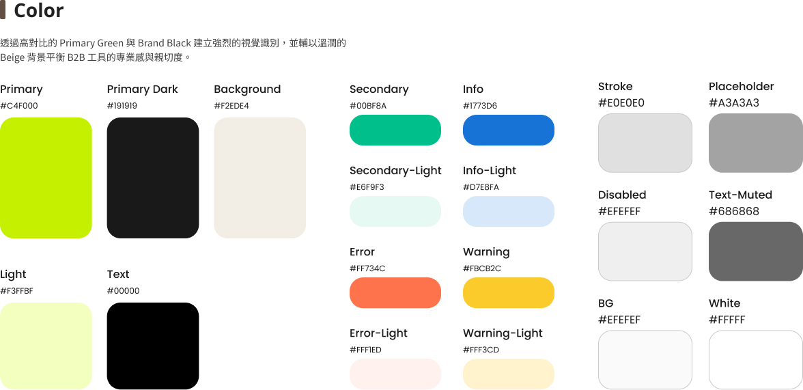
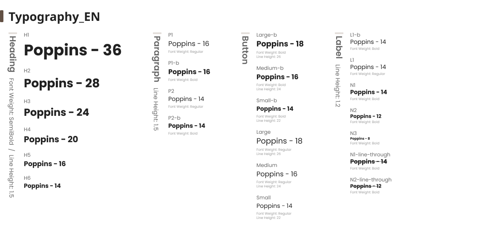
UI Kit
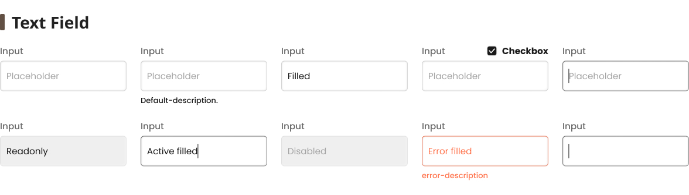
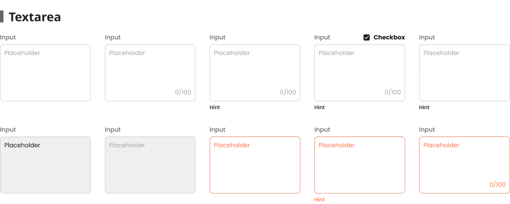
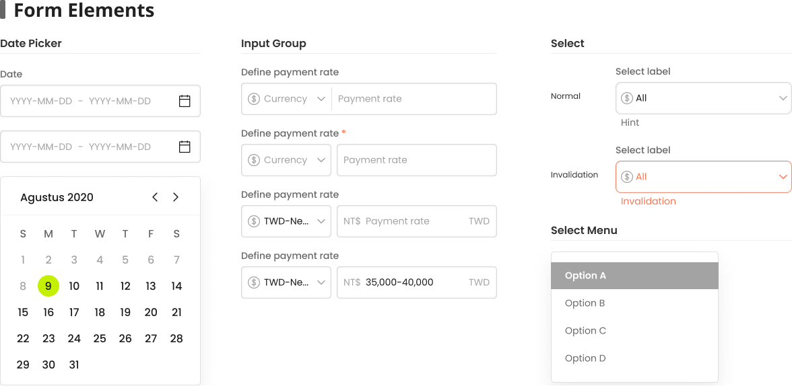
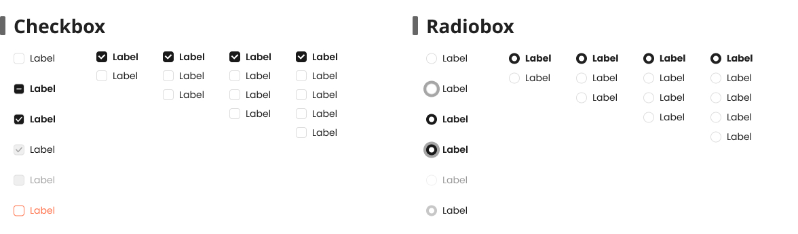
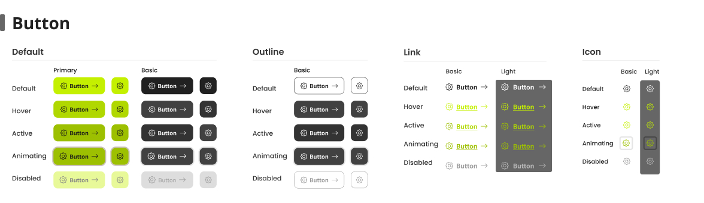
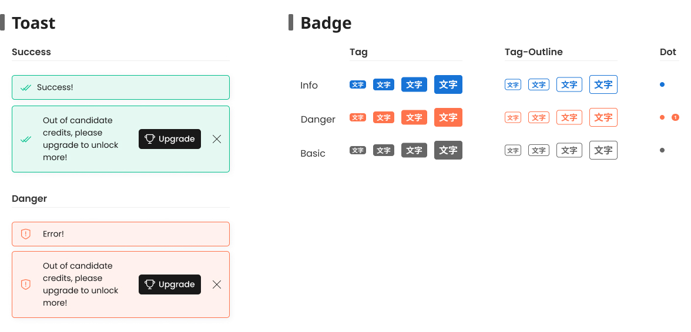
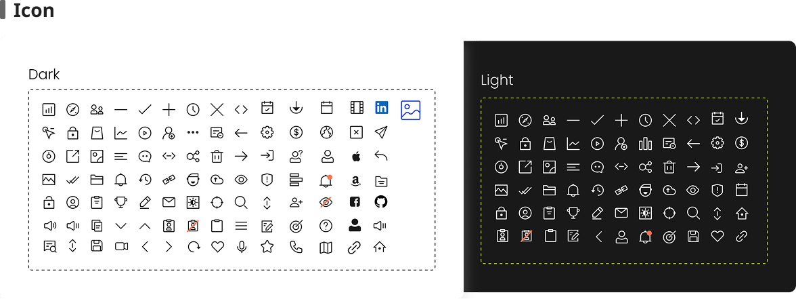

在 LUCY 從 0 到 1 的開發歷程中，我對 B2B 產品設計與團隊協作有了更深層的理解：
- 業務邏輯重於佈局：體悟到設計的核心在於「解構業務流程」。透過定義自動化路徑，成功將複雜的招募痛點轉化為直覺的操作體驗。
- 高密度資訊的權重處理：在處理 SaaS 龐雜數據時，學會運用資訊架構 (IA) 與視覺降噪，在維持高資訊量的同時建立清晰權重，引導用戶精準決策。
- 標準化協作語彙：深刻理解 User Flow 與規範文件是與工程師對接的「邏輯防線」，能有效消除溝通斷層，確保產品 0 到 1 的開發還原度。
- 研究驅動的設計決策：從訪談驗證中學會抽離主觀偏好，依據用戶心智模型進行功能收斂，確保產品設計與市場需求精準對齊。